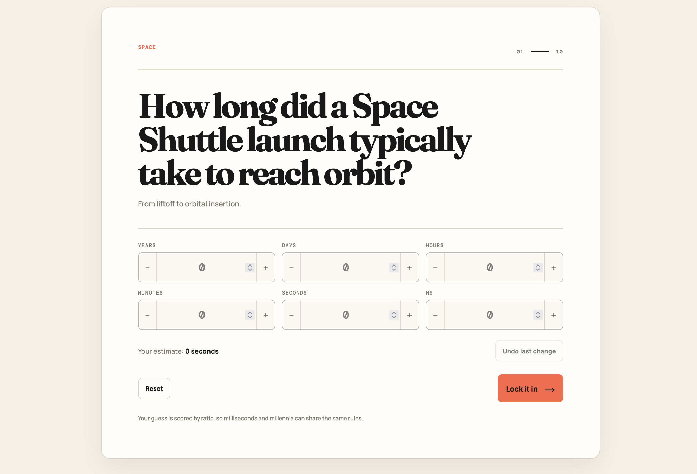

Browser game
HowLong
A guessing game about how long things take.

How long did a Space Shuttle launch typically take to reach orbit?
HowLong is a duration-estimation game. Read a question, set a duration, and submit your best guess.
The answer is entered in time units, from years down to milliseconds. The interface makes very different scales of time part of the same interaction.